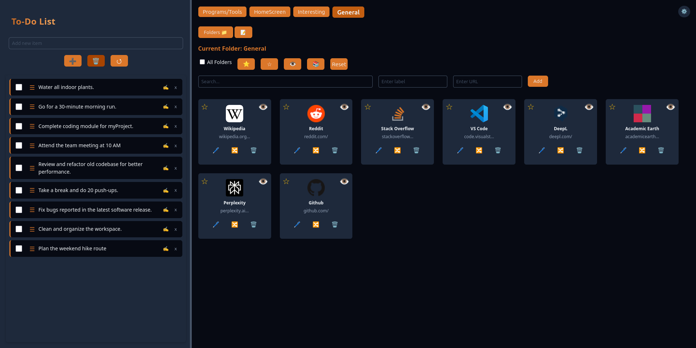
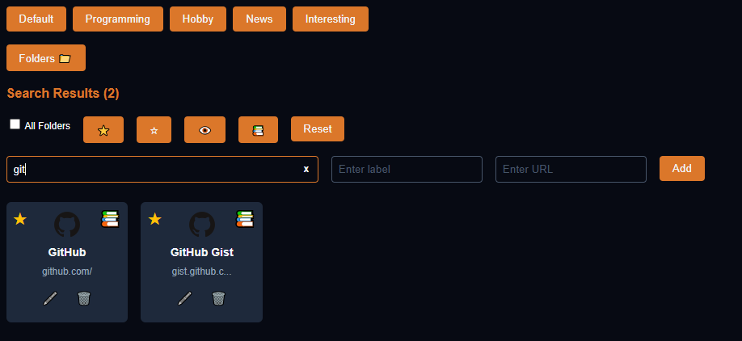
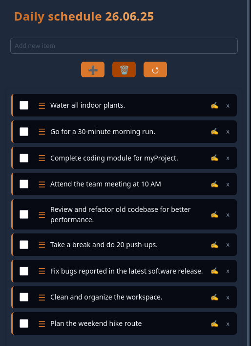

Power up your new tab with an intuitive Advanced Bookmark Manager, integrated To-Do List, and a Privacy-Focused design.
Easily add, edit, organize, and access your essential websites with customizable folders.
Quickly find bookmarks and folders with a search that scans both labels and URLs. Categorize and find using filters.
Manage tasks efficiently—add, complete, and reorder them to boost your productivity.
Curious about what's new? Click below to view our recent changes: